このハンズオンへようこそ！
この Codelab では、Gemini in Android Studio の Agent モードを使って Android アプリを実装します。単に「AI にコードを書かせる」のではなく、AGENTS.md・スキル・制約付きプロンプト・差分レビューといった、Agent を実務の開発で使いこなすための技術を体験するのがゴールです。
ギャラリーから選んだ写真、またはカメラ Intent で撮った写真の上に、絵文字スタンプをペタペタ貼れるアプリです。小さな題材ですが、Photo Picker / カメラ Intent + FileProvider / ジェスチャ処理 / 状態管理と論点が揃っていて、Agent への指示の良し悪しが結果に直結します。
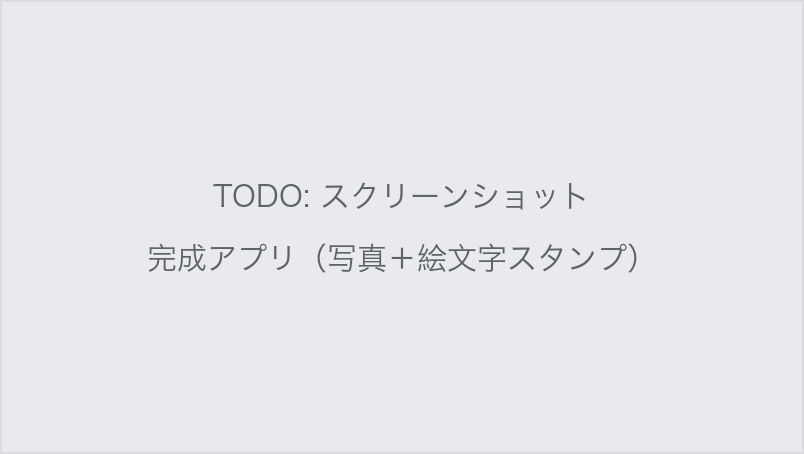
まず、全員で同じプロジェクトを作るところから始めます。
File > New > New Project）で New Project を選択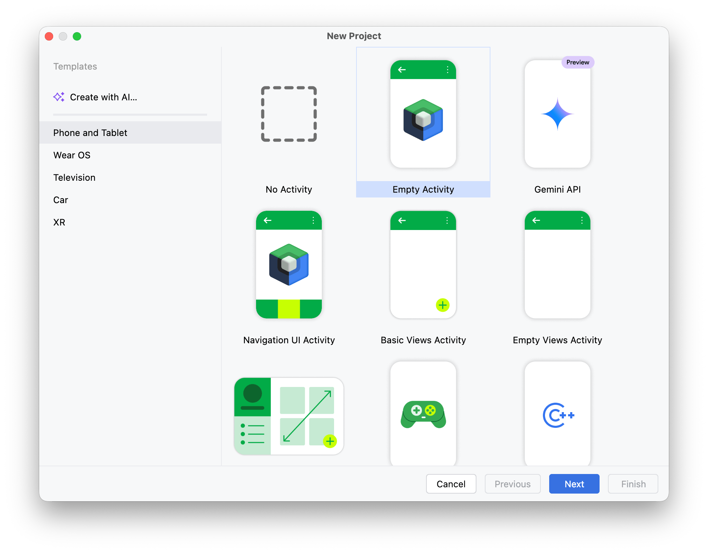
EmojiStamp と入力し、他はデフォルトのまま Finish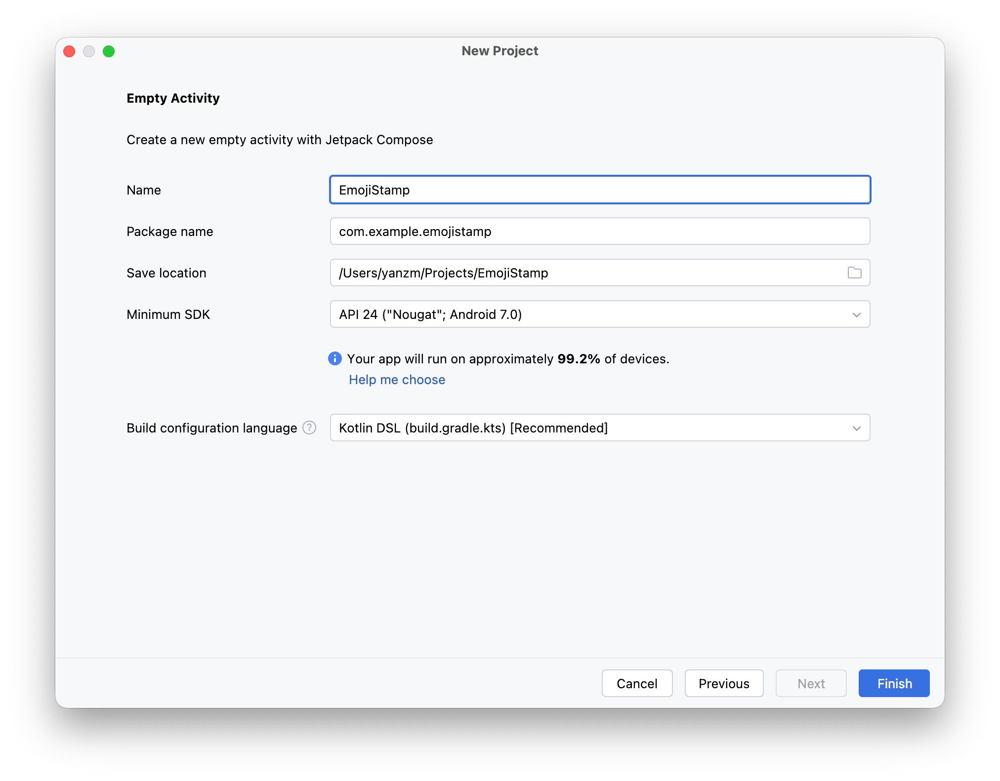
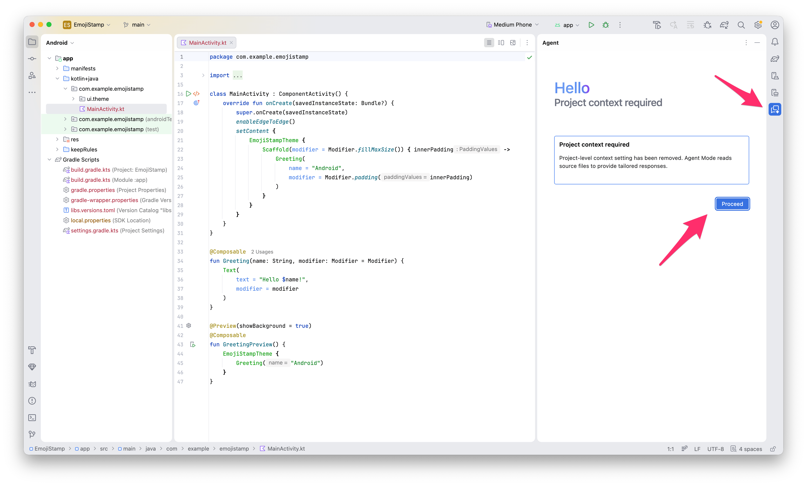
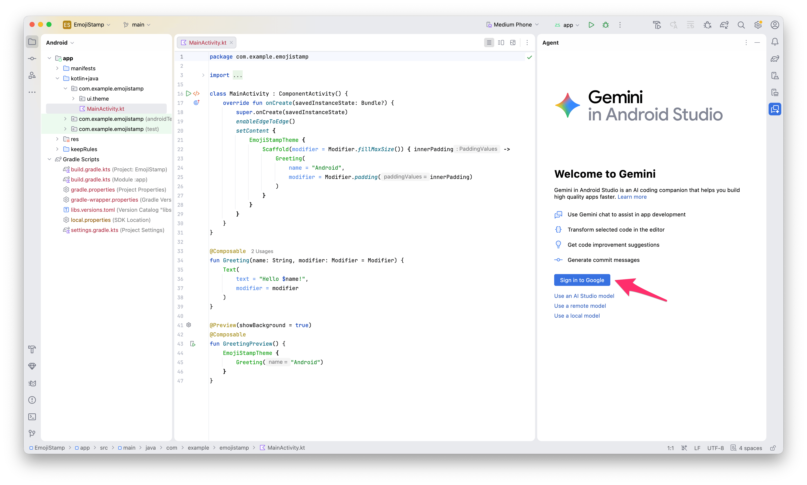
Agent は複数ファイルを一気に書き換えます。変更を差分で追い、いつでも戻せる状態にしておくのが Agent 活用の大前提です。
VCS > Enable Version Control Integration... を選び、Git を選択して OKGit > Commit...）initial commit と入力し、Commit ボタンを押します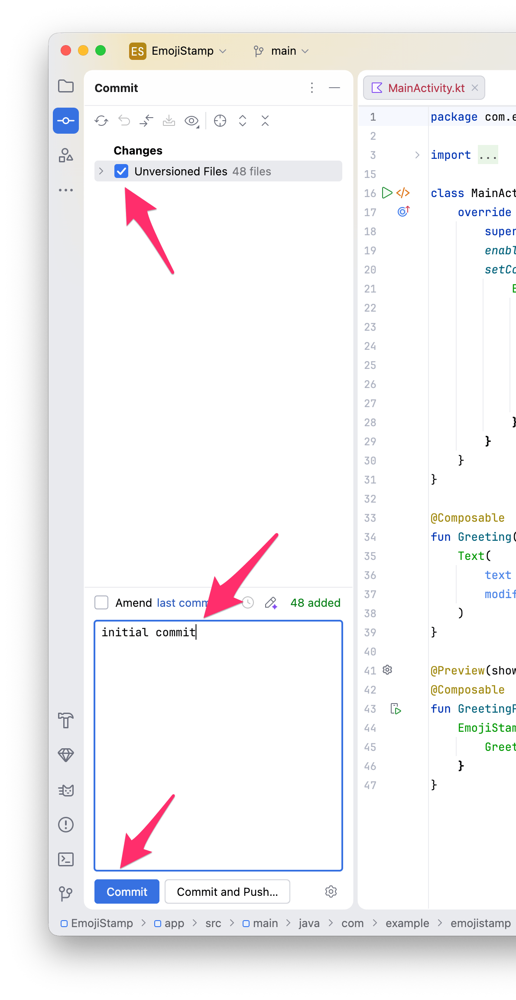
かつては「質問用の Chat」と「実装用の Agent」でモードが分かれていましたが、現在は1つの Agent パネルに統合されています。ツールウィンドウバーの Agent アイコンで開き、入力欄（Ask AI）に質問でも実装依頼でも、そのまま書けば OK です。
Agent は、ファイル検索・読み取り、複数ファイルの編集、シェルコマンド実行、デバイス操作（スクリーンショット取得・Logcat 確認）などのツールを持ち、ビルド・エラー修正まで自律的に進めます。「説明して」「レビューして」のようなファイルを変更しない依頼にもそのまま答えてくれます。
Agent パネルの 「+」（New Conversation） で会話を追加すると、複数のエージェントタスクを並列に実行できます。Recent Chats で会話を切り替えて進捗を確認でき、会話ごとに異なるモデルを選ぶことも可能です（File > New > New Agent Tab で専用タブも開けます）。
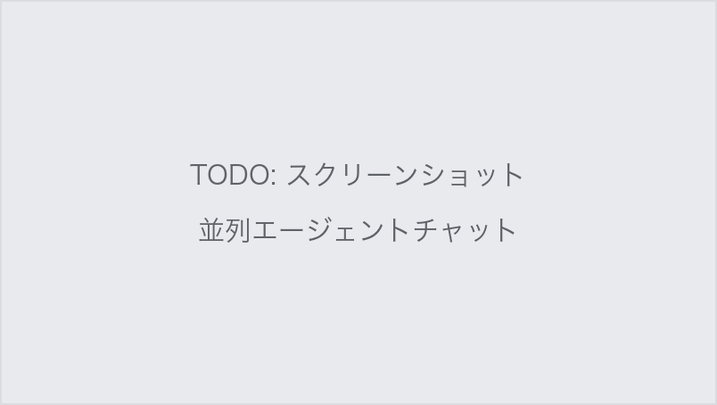
Agent の出力品質は「何を知っているか」で決まります。
@ファイル名 で添付）すると精度が上がりますXxxScreen を〜」のように、対象を具体的に指すのも有効ですGemini の設定は Settings > Tools > AI にまとまっています（ステータスバーの Gemini アイコン → Configure Gemini... からも開けます）。本編に入る前に、どんな項目があるか眺めておきましょう。
@prompt で呼び出す定型プロンプト）を管理しますTools > AI 直下の Enable Pre-Bundled Skills で、同梱の Android スキル（後述）を有効にできます（デフォルトで有効）使用モデルは Agent パネルの入力欄右下のピッカーで切り替えます（例：Gemini 3 Flash Preview）。
AGENTS.md は、すべての指示の前に自動で読み込まれる「プロジェクトの掟」です。ソースコードと一緒にバージョン管理できるため、チームの規約を Agent に守らせる仕組みとして機能します。
プロジェクトのルートに AGENTS.md を作成し、次の内容を書いてみましょう。
# EmojiStamp プロジェクトの指示
- 言語は Kotlin、UI は Jetpack Compose + Material3 を使う
- 依存関係の追加は最小限にし、追加する場合は理由を説明する
- deprecated な API は使わない
- 変更は依頼された範囲に留め、無関係なリファクタリングをしない
- 説明は日本語で行う
AGENTS.md が「常に効く掟」なら、スキルは「必要なときだけ読み込まれる専門知識」です。エージェントスキルのオープン標準に基づく Markdown ベースの仕組みで、Google が Android 開発のベストプラクティス集を android/skills リポジトリで公式提供しています。
Google 公式の Android スキルは最初から同梱されています。Settings > Tools > AI の Enable Pre-Bundled Skills が有効（デフォルト）なら、新しいエージェントセッションで自動的に使われます。エッジツーエッジ対応、adaptive UI、テスト整備、ライブラリ移行などのベストプラクティスが含まれます。
同梱以外のスキルを追加したい場合：
.agents/skills/ に配置@skill-name タスク内容 の形式で明示的に呼び出すこともできます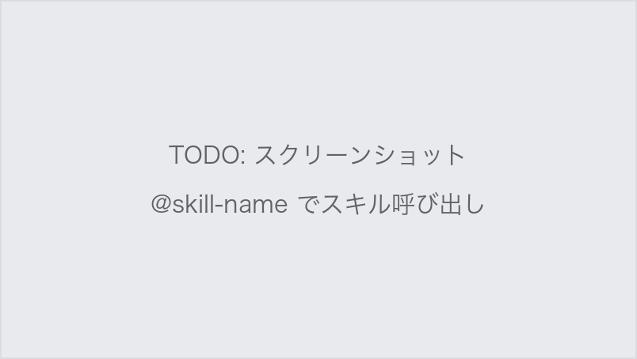
Agent は変更を差分で提案し、あなたが Accept / Reject を判断します。中級者のあなたはコードが読めるので、PR レビューと同じ目で見てください。特に注意すべきは：
build.gradle.kts に追加されていないかAndroidManifest.xml に追加されていないか（後のステップで実例が出ます）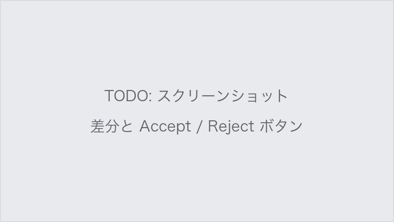
最初の機能実装です。ここでの主題は「制約付きプロンプトで実装方式を制御する」ことです。
Agent に次のように指示します。「制約:」以下がポイントです。
写真を1枚選んで画面に表示する機能を実装してください。
制約:
- Photo Picker（PickVisualMedia の ActivityResultContract）を使うこと
- 選択した画像は Uri のまま状態として保持すること
- UI は stateless な composable に切り出し、状態は呼び出し側でホイスティングすること
- READ_MEDIA_IMAGES などの権限は追加しないこと（Photo Picker には不要）
差分を確認して Accept し、実行。ボタンから写真を選んで表示されれば成功です。
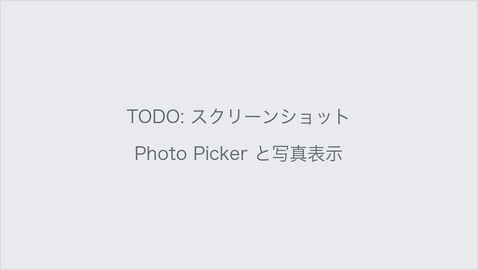
次に、カメラアプリを Intent で呼び出して撮影できるようにします。
「カメラで撮影」ボタンを追加してください。
制約:
- ACTION_IMAGE_CAPTURE の Intent でカメラアプリを起動すること（CameraX などのライブラリは使わない）
- 撮影画像は FileProvider 経由の Uri に保存すること（EXTRA_OUTPUT を使う）
- CAMERA 権限は AndroidManifest.xml に追加しないこと（この Intent には不要）
- 撮った写真は既存の画像表示エリアに表示すること
Accept する前に、次のチェックリストで差分をレビューしてください。
AndroidManifest.xml に ACTION_IMAGE_CAPTURE に CAMERA 権限は不要で、むしろ Manifest に宣言すると実行時権限が必須になり複雑化します。追加されていたら「CAMERA 権限は不要なので削除して」と指示しましょうauthorities が applicationId ベースになっているかfile_paths.xml の保存先が妥当か（cache-path など）実行して、撮影 → 表示まで確認しましょう。
動いたらコミットしておきましょう。
メイン機能です。状態設計をプロンプトで指定しながら進めます。
画面下部に絵文字パレットを追加してください。
制約:
- 絵文字は 😀🎉❤️⭐🐱🔥 の6種類を LazyRow で横並びに表示
- 選択中の絵文字は枠線などで強調表示
- 「選択中の絵文字」の状態は親 composable にホイスティングすること
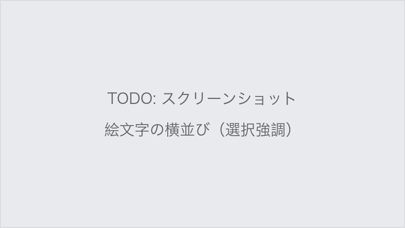
データ構造まで指定して依頼します。
写真の上をタップしたら、選択中の絵文字をその位置に配置する機能を実装してください。
制約:
- スタンプは data class Stamp(val emoji: String, val offset: Offset) のリストとして管理
- 状態はまず remember で保持する（ViewModel は使わない）
- pointerInput の detectTapGestures でタップを検出
- タップ位置がスタンプの中心になるように配置
実行して、タップ → スタンプ配置を確認しましょう。🎉 動いたらコミット。
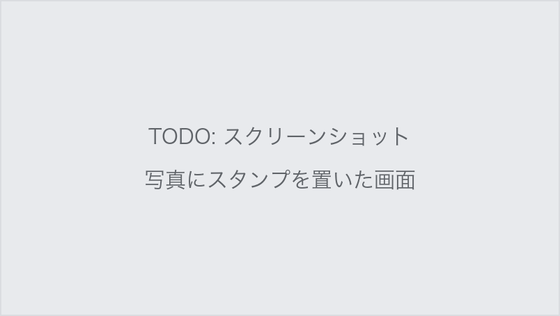
置いたスタンプをドラッグで移動できるようにしてください。
detectDragGestures を使い、ドラッグ対象はタッチ位置に最も近いスタンプとします。
スタンプをロングタップしたら削除できるようにしてください。
タップ配置・ドラッグ・ロングタップ削除が共存すると、ジェスチャの競合が起きることがあります。おかしな挙動になったら、現象を具体的に伝えて直させましょう（例：「スタンプをドラッグしようとすると新しいスタンプが置かれてしまう。ドラッグとタップを区別して」）。
ここからは自由時間です。学んだ「制約付きプロンプト＋差分レビュー」を使って、アプリを好きに育ててください。ネタに困ったら：
ACTION_SEND でスタンプ済み画像を共有（Intent の応用）transformable でスタンプをピンチ操作MainActivity.kt をレビューして。ファイルは変更せず、再コンポジションの観点で問題を指摘して」——実装以外の依頼も同じ Agent パネルでできます.agents/skills/ へおつかれさまでした！🎉
このハンズオンで体験したこと：